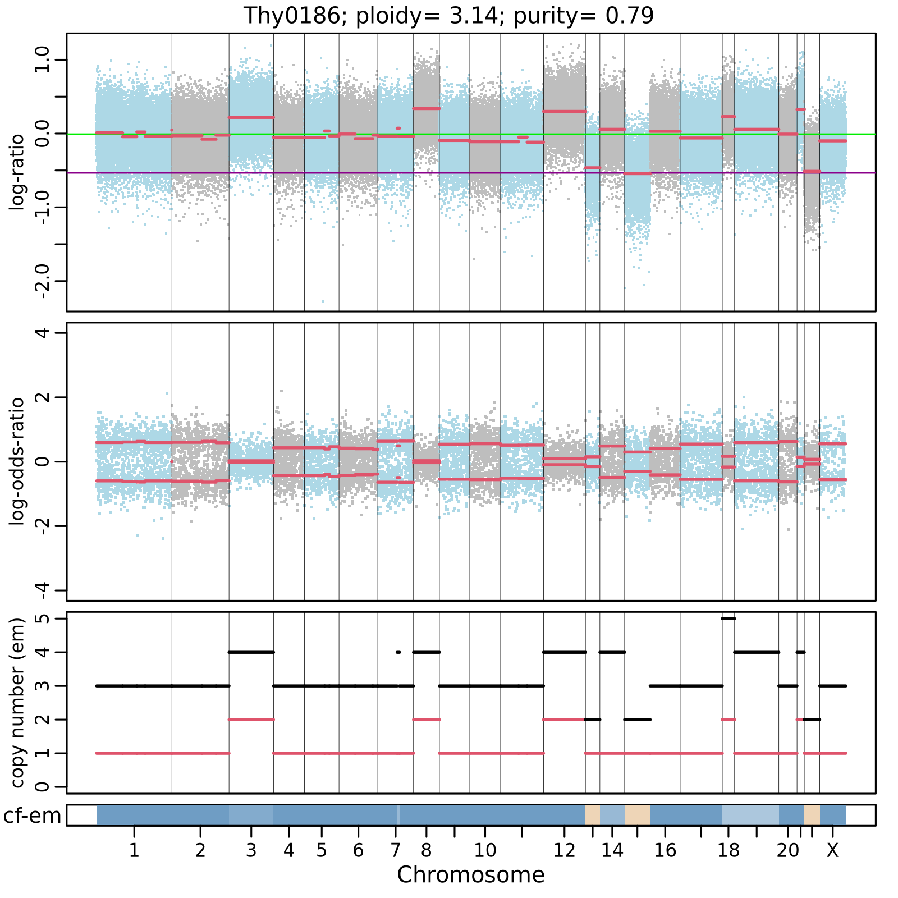

Resources
Explore bioinformatic tools and step-by-step tutorials.

auto-facets
auto-facets automates allele-specific copy-number variation (CNV) analysis using the FACETS algorithim. It calculates tumor purity, ploidy, and CNVs, and automatically generates output plots, tables, and .seg files for further analysis.
GATES
GATES automates WES analysis in a few commands. From raw FASTQ files, it detects somatic and germline variants and outputs potential pathogenic mutations in a Excel file. Through its simplified interface and ability to run on a laptop, GATES makes WES analysis accessible to non-computational researchers.